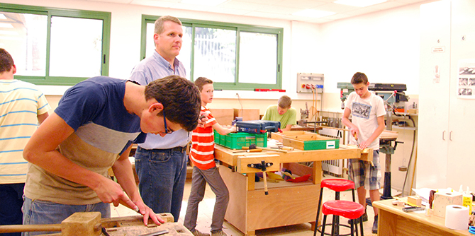
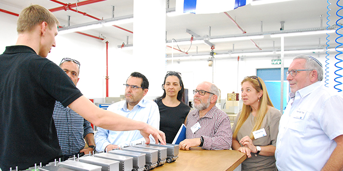

The fourth session of the Mandel Graduate Unit’s series of events on technology education was held on May 9 2017, and included visits to the Beth-El commune in Zichron Yaakov, the Zichron Yaakov education department, and the Hebrew Reali High School in Haifa.
The day began with a visit to the technology school of the Beth-El community in Zichron Yaakov — a commune of Christian Zionists from Germany who came to Israel more than five decades ago and settled in Zichron Yaakov. Zvika Yavnieli, the school principal, presented the community’s unique ethos to the fellows and introduced them to its education system, which includes kindergartens, an elementary school, and a high school. All of the schools operate according to a dual education model that is well-established in Germany, in which students are taught a trade and work in factories. The Mandel graduates toured the electronics and welding workshops, where they met with students who presented some of their projects, and then toured the high school.

Next, the group met with Dr. Miriam Korkus-Panoyan, director of the Zichron Yaakov municipal education department and a graduate of Cohort 7 of the Mandel School for Educational Leadership. Dr. Korkus-Panoyan described her failed attempts to establish a technology track at the local high school due to the poor image of vocational education in the eyes of many of the parents in Zichron Yaakov.
At the Hebrew Reali School in Haifa, Mendi Rabinovitz, director of the Beit Biram high school campus and a graduate of Cohort 10 of the Mandel School for Educational Leadership, described a different experience. He told the participants about the success of the technology track that he launched at his school three years ago, as part of his vision to create social change via technology. The program, which opened with 23 students, now has 100 students and a staff of dedicated teachers, and enjoys enthusiastic support from parents.
The next session of the round table will be devoted to further exploration of technology education in Israel and to formulating a joint decision about the product that will emerge from the learning process, and identifying the necessary steps and tools necessary to achieve the desired goal.

{kind=link}
{kind=link}